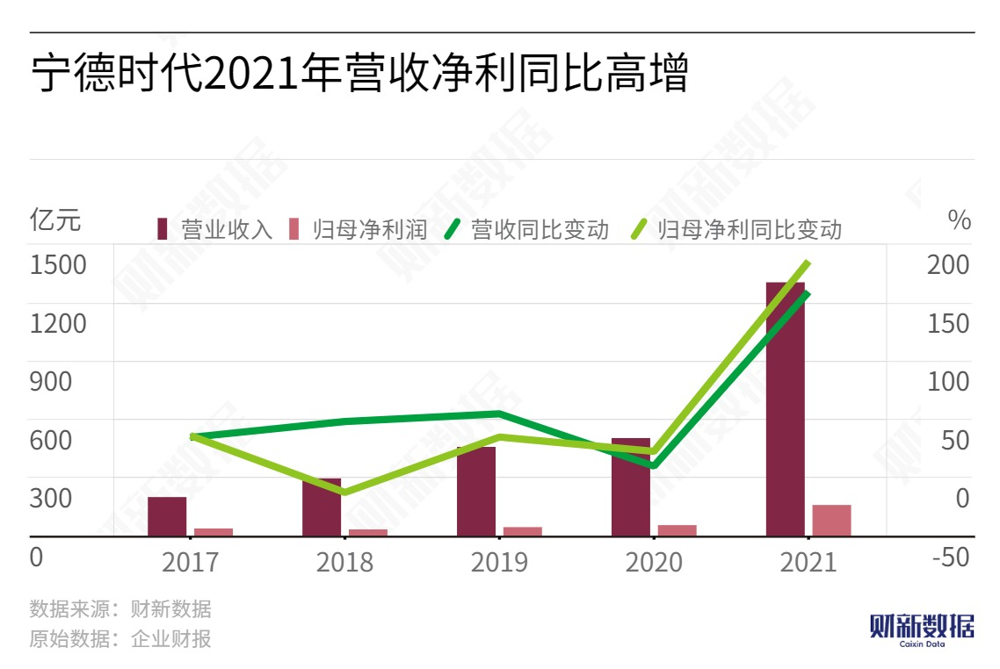

On April 29th, CATL (300750.SZ), a leading global manufacturer of electric vehicle batteries, released its financial report for the first quarter of 2022, which was delayed by two days from the previously scheduled disclosure time. The financial report showed that in the first quarter, CATL's revenue reached 48.68 billion yuan, an increase of 153.9% compared to the same period last year. However, the net profit dropped by 20% to 1.49 billion yuan, far below the market research institutions' previous prediction of around 5 billion yuan, and the non-GAAP net profit was only 980 million yuan, a decrease of 41.6% year on year.

This is the first quarter-over-quarter decline for CATL since 2020. The company's gross profit margin for the first quarter of 2022 was 14.48%, a decrease of 10.88 percentage points from the previous quarter, also lower than market expectations. As a result, on May 5th, CATL's stock price fell sharply by 11.4%. Not long ago, CATL also released an impressive annual report. Driven by the high demand for electric vehicle batteries and energy storage systems worldwide, CATL's revenue in 2021 reached 1303.56 billion yuan, an increase of 159.06% year on year, and the net profit attributable to shareholders reached 15.931 billion yuan, an increase of 185.34% year on year, exceeding the sum of the three years from 2018 to 2020.
Why did CATL suddenly collapse in the first quarter of 2022 when the 2021 annual report was good?
Upstream pressure costs cannot be ignored, downstream demand from automakers is weak
CATL's revenue is mainly composed of power battery systems, energy storage systems, and battery materials. In 2021, the three businesses contributed 70.19%, 10.45%, and 11.86% of the revenue, respectively. Among them, the core revenue source was the power battery business, with revenue growing by 132.06% to 91.5 billion yuan. The energy storage and lithium battery businesses had the highest growth rates, reaching 601.01% and 350.74% respectively.
Huaxin Securities pointed out that the main reason for the decline was the high increase in upstream costs and the failure of downstream price increases to meet expectations.
Battery Giants Face Multiple Competitors
In 2021, with the backdrop of a high-growth new energy vehicle market, there is a high demand for batteries and intense competition, which is squeezing profit margins. CATL not only has to defend against the expansion of overseas battery giants, but also faces threats from the rapid rise of domestic second- and third-tier battery manufacturers and the increased efforts of car companies to lay out their own battery strategies, which all could potentially erode CATL's market share.
According to SNE Research, in the first two months of 2021, CATL's global market share rose to 34.4%, ranking first in the world, which is 20 percentage points higher than second-ranked South Korean battery company LG Chem. In 2021, although the market shares of LG Chem, Panasonic, and SK Innovation have decreased, their installations have all increased by more than ten percent year-on-year.
In China, innovative companies such as SVOLT, EVE Energy, and Farasis Energy, held onto their top 10 global market share positions in 2021, with their installations all increasing by a multiple. Their market shares have increased by 0.4%, 0.4%, and 0.6%, respectively, to 2.7%, 2.1%, and 1%. Among them, Farasis Energy had the largest year-on-year growth rate of 430.8%, making the competition even more crowded.
In the first quarter of 2022, CATL, which previously had a cost advantage, had gradually leveled off with other domestic battery manufacturers in terms of profit margins. CATL, EVE Energy, BYD, and Guoxuan High-Tech have profit margins of 14.48%, 14.5%, 12.4%, and 13.8%, respectively.